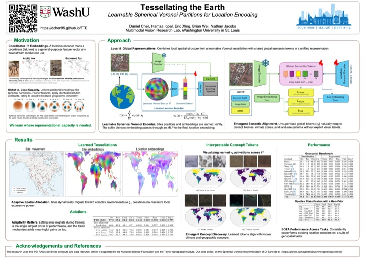

ECCV
2026
2026
Tessellating the Earth: Learnable Spherical Voronoi Partitions for Location Encoding
Location encoders turn a latitude–longitude pair into a learned representation, but most project coordinates onto a fixed basis and spend as much capacity on open ocean as on a growing city. TTE builds the encoder from a learnable spherical Voronoi partition: each site carries its own embedding and migrates during training toward the areas that matter, end to end and fully differentiable. A small vocabulary of shared global semantic tokens, distilled from satellite imagery, lets distant sites with similar environments share meaning. TTE sets a new state of the art across geospatial classification and regression benchmarks and is the strongest geographic prior for fine-grained species classification on iNaturalist-2018.
